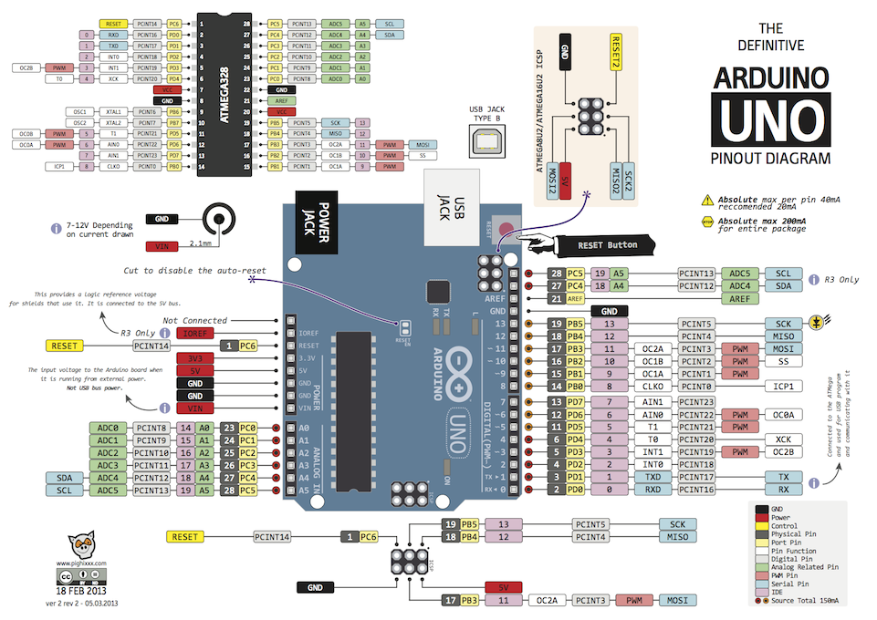
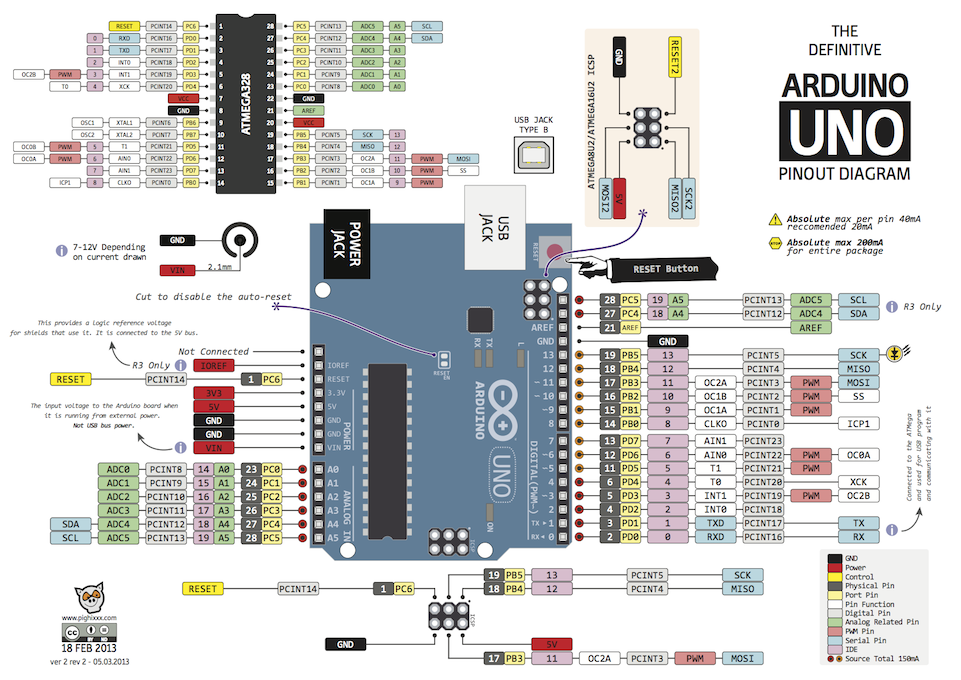
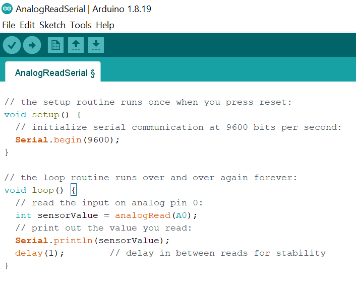
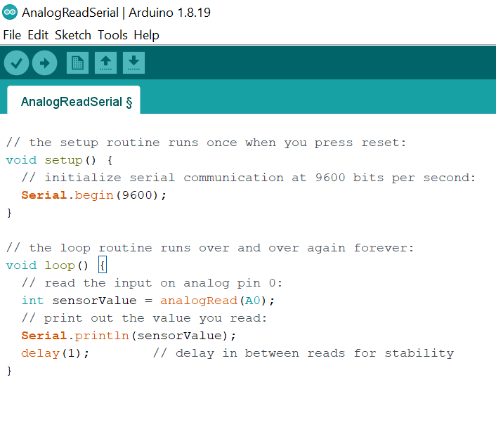

Arduinos!!
I'm going to show you what they are, what they can do, and the basics of how to set
one up to do simple things like make an LED dimming circuit, control the speed of motors,
and even make a simple oscilloscope.
So what is an Arduino?
I'm sure you've heard about these things a million times by now, and if you are confused
you have every right to be, because the word Arduino refers to so many different things.
Keep reading and I will explain all of them.
Microcontrollers are integrated circuits that are basically tiny computers. They can run small, simple software programs. They are low-powered enough that they can be powered by a battery for days, but they are fast enough to process data much faster than any human being can think.
Arduino is a company in Italy that designs and sells circuit boards that make microcontrollers easy to use. They call these circuit boards Arduinos, and there are a lot of different types of Arduinos! For example, you've got simple Arduino boards like the Arduino Uno, which is cheap and good enough for most projects. You could use an Arduino Uno to control motors, lighting, cameras, or even build a simple robot. And then you have more fancy Arduinos with more powerful processors which have wifi, ethernet and more.
The company Arduino open sources all of their hardware designs, which means that you don't just have to buy from them, there are countless 3rd party companies that make their own variants of the Arduino hardware designs. They can't call them Arduinos, but functionally they are the same thing. There are also these things called Arduino "shields", which are basically circuit boards that plug into your main Arduino circuit board, and let you do more stuff. For example, Adafruit makes shields that let you control motors and servos, without having to design motor control circuitry. And Sparkfun have shields that let you turn your Arduino into a simple cell phone, or an MP3 player!


Okay, so that was a quick overview of Arduino the company, and Arduino hardware. But there's more!
There's also the Arduino software development environment, and this is what makes Arduino good for beginners.Historically, if you wanted to program microcontrollers, you'd have to type out a lot of binary and memorize a lot of hard to remember registers and instructions. Then you'd have to use special programming hardware with custom made cables to upload your program onto your microcontroller.
Arduino, the company, got rid of all of that. They created software that works on Windows, Mac, and Linux, which makes uploading your code as simple as connecting a USB cable and clicking a button. They created a programming language that lets you configure all of the Arduino hardware products in the same way.
Although it's not as simple as learning Python, the Arduino software is one of the easiest programming experiences you'll ever have. Ok, so hopefully that clarifies what Arduino means in different contexts.
Microcontrollers are integrated circuits that are basically tiny computers. They can run small, simple software programs. They are low-powered enough that they can be powered by a battery for days, but they are fast enough to process data much faster than any human being can think.
Arduino is a company in Italy that designs and sells circuit boards that make microcontrollers easy to use. They call these circuit boards Arduinos, and there are a lot of different types of Arduinos! For example, you've got simple Arduino boards like the Arduino Uno, which is cheap and good enough for most projects. You could use an Arduino Uno to control motors, lighting, cameras, or even build a simple robot. And then you have more fancy Arduinos with more powerful processors which have wifi, ethernet and more.
The company Arduino open sources all of their hardware designs, which means that you don't just have to buy from them, there are countless 3rd party companies that make their own variants of the Arduino hardware designs. They can't call them Arduinos, but functionally they are the same thing. There are also these things called Arduino "shields", which are basically circuit boards that plug into your main Arduino circuit board, and let you do more stuff. For example, Adafruit makes shields that let you control motors and servos, without having to design motor control circuitry. And Sparkfun have shields that let you turn your Arduino into a simple cell phone, or an MP3 player!
Okay, so that was a quick overview of Arduino the company, and Arduino hardware. But there's more!
There's also the Arduino software development environment, and this is what makes Arduino good for beginners.Historically, if you wanted to program microcontrollers, you'd have to type out a lot of binary and memorize a lot of hard to remember registers and instructions. Then you'd have to use special programming hardware with custom made cables to upload your program onto your microcontroller.
Arduino, the company, got rid of all of that. They created software that works on Windows, Mac, and Linux, which makes uploading your code as simple as connecting a USB cable and clicking a button. They created a programming language that lets you configure all of the Arduino hardware products in the same way.
Although it's not as simple as learning Python, the Arduino software is one of the easiest programming experiences you'll ever have. Ok, so hopefully that clarifies what Arduino means in different contexts.
When people say they used "an Arduino" for their project-
Now when people say they used "an Arduino" for their project, they are probably talking
about the Arduino Uno.
It's highly unlikely that you will outgrow one any time soon, so it's the perfect Arduino
hardware for this beginners tutorial.
You can get them from Amazon cheaply, and if you have the money I recommend buying one
of the many Uno kits out there where you get a lot of different pieces of hardware to play
with.
Okay, so you've got your Arduino Uno. The first thing I want to do is get you familiar with the hardware. You will often hear Arduinos being called "microcontrollers", and that's technically incorrect. Arduinos are circuit boards that have microcontroller chips on them, but they also have a lot of other stuff on there too.
Okay, so you've got your Arduino Uno. The first thing I want to do is get you familiar with the hardware. You will often hear Arduinos being called "microcontrollers", and that's technically incorrect. Arduinos are circuit boards that have microcontroller chips on them, but they also have a lot of other stuff on there too.
Let's take a quick tour!
This is the microcontroller.

Arduino UNOs use a series of microcontrollers called ATMEGA AVRs. They are made by a company called Atmel. You can buy just the bare chips on their own for about a dollar but then you'd have to do a lot of soldering. Connected to the microcontroller is a crystal resonator. This controls how fast the microcontroller is running.
Now in order to upload the software you create to the main microcontroller, there's actually another microcontroller! This chip is what lets you connect your USB cable to the Arduino board, and communicate via USB. It lets you upload your programs onto the main microcontroller, and once you have your program running, this chip is what allows you to send messages back and forth between your computer and your Arduino. And this is extremely important for debugging!
One great thing about Arduinos is that you can power them purely from your USB cable. But! If you don't want your project always attached to a computer, you can just use an external 9 volt DC power source with the barrel jack over here. The Uno has a built in voltage regulator that will reduce the voltage to 5 volts. And if you ever want to "reboot" your Arduino's program, you've got a reset button. If you have time, it's worth studying the Arduino Uno schematic.

Don't worry if it looks complicated, you don't need to understand most of it, I'm trying to get you to understand what the Arduino designers did. They took an off the shelf microcontroller that requires a lot of extra parts to get working, and they put all of those things together in an easy to use way. And if you choose to learn more about electronics, you can create circuit boards like this too. Okay, so that's what's under the hood.
Next let's talk about the pin connectors. Over here you have the power pins.
If you want, you can connect wires here to power other circuitry with 5 volts or 3.3 volts. Just make sure you whatever you power doesn't draw more than a few milliamps! A few LEDs is okay, but a large motor would be an Ardui-nono!!
TX and RX is for sending and receiving serial data. You could use this port to send and receive data from a GPS module, bluetooth modules, wifi modules and more. Pins 2 to 13 are for digital inputs and outputs. Normally when people think of binary you think of just spitting out 0s and 1s. But! With most microcontroller pins you can actually activate a third state, and use them as a digital input. So you can use this pin as an output where it spits out 5V for a digital 1, or 0V for a digital 0. Or, you can internally configure the Arduino to expect a voltage on the pin, and that voltage could be interpreted as a 1 or a 0. It's a system called tristate logic, and it's worth reading up on, but Arduino makes it really easy to change between inputs and outputs in software. Here we have 6 analog input pins, and these are used to measure continuous voltages anywhere from 0 to 5V. I'll talk more about this later.
Finally some of the pins have a tilde in front of them, and this means that you can use them to output pulse width modulated square waves, which I will also show later in the blog. Okay enough about the hardware.
Arduino UNOs use a series of microcontrollers called ATMEGA AVRs. They are made by a company called Atmel. You can buy just the bare chips on their own for about a dollar but then you'd have to do a lot of soldering. Connected to the microcontroller is a crystal resonator. This controls how fast the microcontroller is running.
Now in order to upload the software you create to the main microcontroller, there's actually another microcontroller! This chip is what lets you connect your USB cable to the Arduino board, and communicate via USB. It lets you upload your programs onto the main microcontroller, and once you have your program running, this chip is what allows you to send messages back and forth between your computer and your Arduino. And this is extremely important for debugging!
One great thing about Arduinos is that you can power them purely from your USB cable. But! If you don't want your project always attached to a computer, you can just use an external 9 volt DC power source with the barrel jack over here. The Uno has a built in voltage regulator that will reduce the voltage to 5 volts. And if you ever want to "reboot" your Arduino's program, you've got a reset button. If you have time, it's worth studying the Arduino Uno schematic.

Don't worry if it looks complicated, you don't need to understand most of it, I'm trying to get you to understand what the Arduino designers did. They took an off the shelf microcontroller that requires a lot of extra parts to get working, and they put all of those things together in an easy to use way. And if you choose to learn more about electronics, you can create circuit boards like this too. Okay, so that's what's under the hood.
Next let's talk about the pin connectors. Over here you have the power pins.
If you want, you can connect wires here to power other circuitry with 5 volts or 3.3 volts. Just make sure you whatever you power doesn't draw more than a few milliamps! A few LEDs is okay, but a large motor would be an Ardui-nono!!
TX and RX is for sending and receiving serial data. You could use this port to send and receive data from a GPS module, bluetooth modules, wifi modules and more. Pins 2 to 13 are for digital inputs and outputs. Normally when people think of binary you think of just spitting out 0s and 1s. But! With most microcontroller pins you can actually activate a third state, and use them as a digital input. So you can use this pin as an output where it spits out 5V for a digital 1, or 0V for a digital 0. Or, you can internally configure the Arduino to expect a voltage on the pin, and that voltage could be interpreted as a 1 or a 0. It's a system called tristate logic, and it's worth reading up on, but Arduino makes it really easy to change between inputs and outputs in software. Here we have 6 analog input pins, and these are used to measure continuous voltages anywhere from 0 to 5V. I'll talk more about this later.
Finally some of the pins have a tilde in front of them, and this means that you can use them to output pulse width modulated square waves, which I will also show later in the blog. Okay enough about the hardware.
Software
Most of the work you do with your Arduino will actually be in the software.
So start out by downloading the Arduino software from arduino.cc
During the installation you can expect a lot of prompts like this to show up, where you
are asked if you want to install various drivers.
Just say yes to everything.
Once you are done, connect the Arduino to your computer with a USB cable. Next, start up the Arduino development environment. The first thing you want to do is make sure that the software tries to connect to the right type of Arduino. Go to Tools - Boards, and we are going to be using an Arduino Uno. Next we have to make sure the Arduino environment can actually connect and communicate with your Arduino. Go to Tools - Ports - and select the COM or serial port where your Arduino is connected. If there isn't an Arduino listed here, you may have a problem with your drivers, or you can try plugging your Arduino into a different USB port. The Arduino software has a ton of fantastic, easy to follow demo programs, and studying these is the best place to start learning how to code. Arduino calls them "sketches" which is just a fancy name for a program that you upload to your Arduino.
Let's start with an example where we measure voltages that are being fed into the Arduino. Go to File - Examples - Basics - AnalogReadSerial. All the Arduino examples contain instructions on how to set up the hardware. This one is telling us "Attach the center pin of a potentiometer to pin A0, and the outside pins to +5V and ground."
A 1k or a 10k potentiometer will work great for this. We are going to be using it as a voltage divider to create a voltage anywhere from 0 to 5 volts.
Every Arduino program will have two main areas, the setup and the loop. The setup area is where you configure your Arduino to do certain things for the duration of your program.

It could be information on which pins are inputs, and which are outputs, but in this case we are telling it to send serial data to our computer at 9600 bits per second, which is a pretty standard data rate for these situations. The loop is the area of code that repeats over and over again for as long as the Arduino has power to it. This line will measure the voltage on pin A0, and store the value of it in a temporary place in memory that we are calling sensorValue. sensorValue is an int, or integer, meaning it is a whole number. Once we have copied the analog voltage reading to sensorValue, the command Serial.println will transmit that value from our Arduino, through the USB cable, to our computer, and we can view it.
Click Upload, it will compile the sketch and upload it to your Arduino. Hit the reset button. Now go to Tools - Serial Monitor. You should see a bunch of numbers flying by. As you vary the potentiometer from 0 to 5 volts, you should see a number on screen from 0 to 1023. This is because internally, the Arduino represents the analog voltages it measures with a 10 bit number which can be from 0 to 1023. The number scales linearly with the voltage, so 2.5 volts would be halfway down at 512. You can use these formulas to convert from analog tick values to real world voltages, and vice versa. Now close the serial monitor, and go to Tools, Serial plotter. Now you can get a graph of the voltage your potentiometer is creating over time. It's basically a very simple, low bandwidth oscilloscope!
Let's try another experiment where we build a simple LED dimmer.Go to File - Examples - Analog - AnalogInOutSerial. The instructions for the potentiometer are the same as before. It also says to connect an LED from digital pin 9, to ground.
Note: that it is implied that you will put a resistor in series with the LED! The pins on an Arduino cannot supply much current. Any more than about 20mA and you risk permanently destroying that pin.
Now let's just use a 1k resistor attached to ground. The other side goes to the cathode of an LED, and the LED's anode goes to pin 9. We've already talked about what an int is, but this const int means that the label analogOutPin will always translate to the number 9 throughout the rest of the program. For example here, saying analogWrite(9, outputvalue) wouldn't be very clear. Like... what the hell is the 9 for? Instead we are declaring analogOutPin to be a place in the Arduino's memory that always stores the constant, fixed number 9, so when we write other pieces of code we don't have to memorize which pin numbers we are using for different things.
It's not a big deal right now but this becomes more important when have programs that use a lot of different pins. sensorValue and outputValue are non-constant integer numbers, which means they can change value during the operation of the program. The term for this in programming is a "variable".
On the Arduino platform, an int variable can hold a number anywhere between -32,768 and +32,767. The setup is the same as before, and once again we are using the analogRead function to measure the voltage on a certain pin, which turns out to be pin A0. We store that value in sensorValue. Now we know that the Arduino internally represents analog voltages with numbers from 0 to 1023, but the analogWrite function only accepts values from 0 to 255. So we use the map function here to linearly scale sensorValue down to values between 0 and 255.
Then the analogWrite function takes the number stored in outputValue and uses it to control the voltage on analogOutPin, which is in fact pin number 9. The serial printing stuff is similar to what we had before, and at the end of each loop the delay function will make the Arduino pause execution of all code for a specific number of milliseconds.
Once again we click upload, hit reset on the Arduino, and now we have a system that can control the brightness of an LED with a potentiometer! Now you are probably thinking... so what? You can do that without the Arduino! Well, let's probe the output of pin 9 with an oscilloscope to see what's really happening here.
So you can see how by reading voltages from sensors, and writing code to control motors and servos, an Arduino can easily become the brains of a simple robot. In fact, you can get kits to build Arduino based robots for as little as $74. So those were two easy examples of what you can do with an Arduino, but you can do SO much more, and there are tutorials all over the internet for them. I hope you learnt something new.Thank you for Reading...
Once you are done, connect the Arduino to your computer with a USB cable. Next, start up the Arduino development environment. The first thing you want to do is make sure that the software tries to connect to the right type of Arduino. Go to Tools - Boards, and we are going to be using an Arduino Uno. Next we have to make sure the Arduino environment can actually connect and communicate with your Arduino. Go to Tools - Ports - and select the COM or serial port where your Arduino is connected. If there isn't an Arduino listed here, you may have a problem with your drivers, or you can try plugging your Arduino into a different USB port. The Arduino software has a ton of fantastic, easy to follow demo programs, and studying these is the best place to start learning how to code. Arduino calls them "sketches" which is just a fancy name for a program that you upload to your Arduino.
Let's start with an example where we measure voltages that are being fed into the Arduino. Go to File - Examples - Basics - AnalogReadSerial. All the Arduino examples contain instructions on how to set up the hardware. This one is telling us "Attach the center pin of a potentiometer to pin A0, and the outside pins to +5V and ground."
A 1k or a 10k potentiometer will work great for this. We are going to be using it as a voltage divider to create a voltage anywhere from 0 to 5 volts.
Every Arduino program will have two main areas, the setup and the loop. The setup area is where you configure your Arduino to do certain things for the duration of your program.

It could be information on which pins are inputs, and which are outputs, but in this case we are telling it to send serial data to our computer at 9600 bits per second, which is a pretty standard data rate for these situations. The loop is the area of code that repeats over and over again for as long as the Arduino has power to it. This line will measure the voltage on pin A0, and store the value of it in a temporary place in memory that we are calling sensorValue. sensorValue is an int, or integer, meaning it is a whole number. Once we have copied the analog voltage reading to sensorValue, the command Serial.println will transmit that value from our Arduino, through the USB cable, to our computer, and we can view it.
Click Upload, it will compile the sketch and upload it to your Arduino. Hit the reset button. Now go to Tools - Serial Monitor. You should see a bunch of numbers flying by. As you vary the potentiometer from 0 to 5 volts, you should see a number on screen from 0 to 1023. This is because internally, the Arduino represents the analog voltages it measures with a 10 bit number which can be from 0 to 1023. The number scales linearly with the voltage, so 2.5 volts would be halfway down at 512. You can use these formulas to convert from analog tick values to real world voltages, and vice versa. Now close the serial monitor, and go to Tools, Serial plotter. Now you can get a graph of the voltage your potentiometer is creating over time. It's basically a very simple, low bandwidth oscilloscope!
Let's try another experiment where we build a simple LED dimmer.Go to File - Examples - Analog - AnalogInOutSerial. The instructions for the potentiometer are the same as before. It also says to connect an LED from digital pin 9, to ground.
Note: that it is implied that you will put a resistor in series with the LED! The pins on an Arduino cannot supply much current. Any more than about 20mA and you risk permanently destroying that pin.
Now let's just use a 1k resistor attached to ground. The other side goes to the cathode of an LED, and the LED's anode goes to pin 9. We've already talked about what an int is, but this const int means that the label analogOutPin will always translate to the number 9 throughout the rest of the program. For example here, saying analogWrite(9, outputvalue) wouldn't be very clear. Like... what the hell is the 9 for? Instead we are declaring analogOutPin to be a place in the Arduino's memory that always stores the constant, fixed number 9, so when we write other pieces of code we don't have to memorize which pin numbers we are using for different things.
It's not a big deal right now but this becomes more important when have programs that use a lot of different pins. sensorValue and outputValue are non-constant integer numbers, which means they can change value during the operation of the program. The term for this in programming is a "variable".
On the Arduino platform, an int variable can hold a number anywhere between -32,768 and +32,767. The setup is the same as before, and once again we are using the analogRead function to measure the voltage on a certain pin, which turns out to be pin A0. We store that value in sensorValue. Now we know that the Arduino internally represents analog voltages with numbers from 0 to 1023, but the analogWrite function only accepts values from 0 to 255. So we use the map function here to linearly scale sensorValue down to values between 0 and 255.
Then the analogWrite function takes the number stored in outputValue and uses it to control the voltage on analogOutPin, which is in fact pin number 9. The serial printing stuff is similar to what we had before, and at the end of each loop the delay function will make the Arduino pause execution of all code for a specific number of milliseconds.
Once again we click upload, hit reset on the Arduino, and now we have a system that can control the brightness of an LED with a potentiometer! Now you are probably thinking... so what? You can do that without the Arduino! Well, let's probe the output of pin 9 with an oscilloscope to see what's really happening here.
So you can see how by reading voltages from sensors, and writing code to control motors and servos, an Arduino can easily become the brains of a simple robot. In fact, you can get kits to build Arduino based robots for as little as $74. So those were two easy examples of what you can do with an Arduino, but you can do SO much more, and there are tutorials all over the internet for them. I hope you learnt something new.Thank you for Reading...